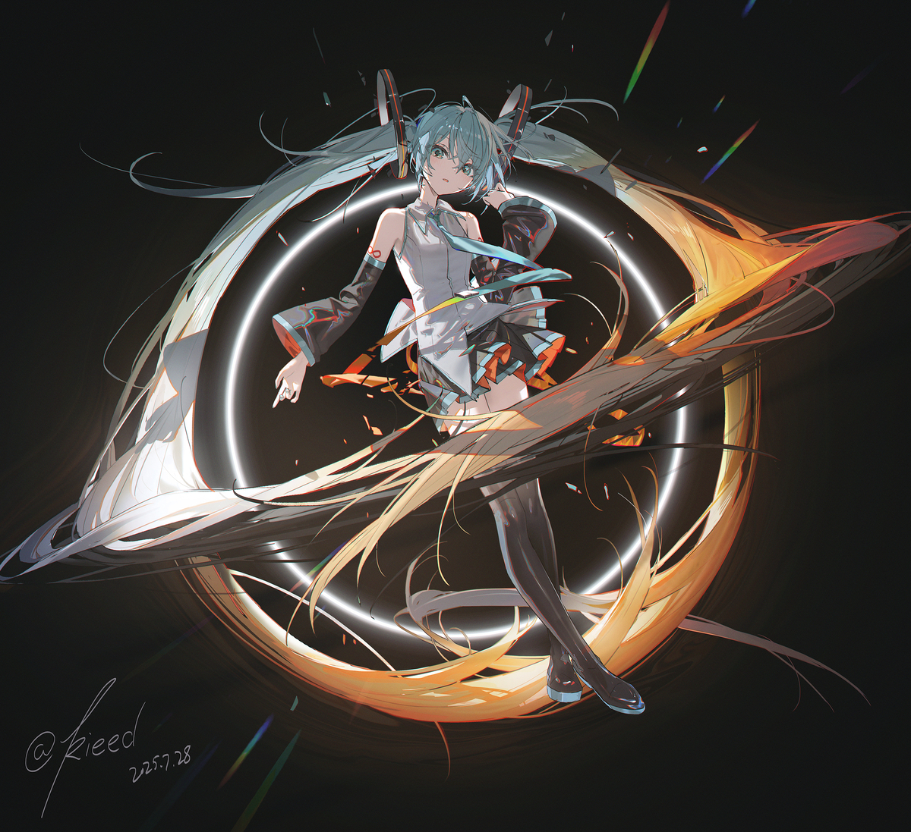

CONNECTEDNESS

11.1 Connectedness and components | 连通性与连通分支
11.1.1 Connected spaces | 连通空间
11.1.1.1 Definition: A topological space \(X\) is connected iff there are exactly two continuous functions \(X \to \{0, 1\}\). (discrete topology)
[点击展开翻译]
11.1.1.1 定义：拓扑空间 \(X\) 是连通的 (connected) 当且仅当恰有两个连续函数 \(X \to \{0, 1\}\)。（离散拓扑）
11.1.1.2 Definition: Two subsets \(A\) and \(B\) of a topological space \(X\) is separated if \(\overline{A} \cap B = A \cap \overline{B} = \emptyset\); they are called a separation of \(X\) if \(A \cup B = X\).
[点击展开翻译]
11.1.1.2 定义：拓扑空间 \(X\) 的两个子集 \(A\) 和 \(B\) 是分离的 (separated)，如果 \(\overline{A} \cap B = A \cap \overline{B} = \emptyset\)；如果 \(A \cup B = X\)，则称它们为 \(X\) 的一个分离 (separation)。11.1.1.3 Proposition: A topological space \(X\) is connected iff any of the following equivalent conditions holds.
- If \(X\) is homeomorphic to the coproduct of topological spaces \(X_1\) and \(X_2\) then exactly one of the two spaces is the empty space.
- Any of its separation by open subsets consists of exactly one empty set.
- Any of its separation by closed subsets consists of exactly one empty set.
- There are exactly two clopen subsets of \(X\).
- There is a continuous surjection from \(X\) to the point space but none to \(\{0, 1\}\).
[点击展开翻译]
11.1.1.3 命题：拓扑空间 \(X\) 是连通的，当且仅当以下任意等价条件成立。
- 如果 \(X\) 同胚于拓扑空间 \(X_1\) 和 \(X_2\) 的上积 (coproduct)，那么这两个空间中恰有一个是空集。
- 它的由开集组成的任意分离中恰有一个空集。
- 它的由闭集组成的任意分离中恰有一个空集。
- \(X\) 恰有两个既开又闭子集 (clopen subsets)。
- 存在从 \(X\) 到单点空间 (point space) 的连续满射，但不存在到 \(\{0, 1\}\) 的连续满射。
11.1.1.4 Proposition: The empty space is not connected, while the point space is connected.
[点击展开翻译]
11.1.1.4 命题：空集不是连通的，而单点空间是连通的。
11.1.1.5 Connectedness of star unions: Let \(X\) be a topological space with a family of connected subspaces \(\{A_i\}_{i \in I}\). If \(\bigcap_{i \in I} A_i \neq \emptyset\), then \(\bigcup_{i \in I} A_i\) is a connected subspace of \(X\).
[点击展开翻译]
11.1.1.5 星状并的连通性：设 \(X\) 为拓扑空间，具有连通子集族 \(\{A_i\}_{i \in I}\)。如果 \(\bigcap_{i \in I} A_i \neq \emptyset\)，则 \(\bigcup_{i \in I} A_i\) 是 \(X\) 的连通子集。
11.1.1.6 Connectedness of chain unions: Let \(X\) be a topological space with a sequence of connected subspaces \(\{A_n\}_{n \in \mathbb{Z}}\). If \(A_n \cap A_{n+1} \neq \emptyset\) for any \(n \in \mathbb{N}\), then \(A = \bigcup_{n \in \mathbb{N}} A_n\) is a connected subspace of \(X\).
[点击展开翻译]
11.1.1.6 链状并的连通性：设 \(X\) 为拓扑空间，具有连通子集序列 \(\{A_n\}_{n \in \mathbb{Z}}\)。如果对于任意 \(n \in \mathbb{N}\) 都有 \(A_n \cap A_{n+1} \neq \emptyset\)，那么 \(A = \bigcup_{n \in \mathbb{N}} A_n\) 是 \(X\) 的连通子集。
11.1.1.7 Theorem: Let \(X\) be a topological space with a family of connected subspaces \(\{A_i\}_{i \in I}\) with \(X = \bigcup_{i \in I} A_i\). If \(A_{i_1} \cap A_{i_2} \neq \emptyset\) for any \(i_1, i_2 \in I\), then \(X\) is connected.
[点击展开翻译]
11.1.1.7 定理：设 \(X\) 为拓扑空间，具有连通子集族 \(\{A_i\}_{i \in I}\)，且 \(X = \bigcup_{i \in I} A_i\)。如果对于任意 \(i_1, i_2 \in I\) 都有 \(A_{i_1} \cap A_{i_2} \neq \emptyset\)，则 \(X\) 是连通的。[点击展开翻译]
证明：设 \(U\) 是 \(X\) 的既开又闭子集。那么对于每个 \(i \in I\)，\(U \cap A_i\) 在 \(A_i\) 中是既开又闭的。因为每个 \(A_i\) 都是连通的，并且 \(U\) 在 \(X\) 中既开又闭，所以存在一个 \(J \subseteq I\)，使得 \(i \in J\) 当且仅当 \(A_i \subseteq U\)，且 \(i \in I \setminus J\) 当且仅当 \(A_i \subseteq U^c\)。然而，对于任意 \(i_1 \in J\) 和 \(i_2 \in I \setminus J\)，我们有 \(\emptyset \neq A_{i_1} \cap A_{i_2} \subseteq U \cap U^c = \emptyset\)。因此，\(J \times (I \setminus J) = \emptyset\)，从而要么 \(U = \emptyset\) 要么 \(U = X\)，故 \(X\) 是连通的。 \(\blacksquare\)
11.1.1.8 Theorem: Let \(X\) be a topological space with a family of connected subspaces \(\{A_i\}_{i \in I}\). If \(A_i\), \(i \in I\), pairwise intersect, then \(\bigcup_{i \in I} A_i\) is a connected subspace of \(X\).
[点击展开翻译]
11.1.1.8 定理：设 \(X\) 为拓扑空间，具有连通子集族 \(\{A_i\}_{i \in I}\)。如果 \(A_i\) (\(i \in I\)) 两两相交，则 \(\bigcup_{i \in I} A_i\) 是 \(X\) 的连通子集。[点击展开翻译]
回想 \(C(X;Y)\) 表示连续函数 \(X \to Y\) 的集合。
11.1.1.9 Theorem: A topological space \(X\) is connected iff the operator \(C(X;\cdot)\) preserves coproducts, and in particular, iff \[C(X; \{0, 1\}) = C(X; \{0\}) \sqcup C(X; \{1\}). \qquad (161)\]
[点击展开翻译]
11.1.1.9 定理：拓扑空间 \(X\) 是连通的当且仅当算子 \(C(X;\cdot)\) 保持上积 (coproducts)，特别地，当且仅当 \[C(X; \{0, 1\}) = C(X; \{0\}) \sqcup C(X; \{1\}). \qquad (161)\]11.1.2 Components | 连通分支
11.1.2.1 Definition: Two points \(p_0\) and \(p_1\) of a topological space \(X\) are connected if \(X\) has a connected subspace \(A\) containing both. An equivalence class of points of \(X\) by being connected is a component of \(X\). The collection of all components of \(X\) is denoted as \(\mathrm{Conn}(X)\).
[点击展开翻译]
11.1.2.1 定义：拓扑空间 \(X\) 的两点 \(p_0\) 和 \(p_1\) 是连通的 (connected)，如果 \(X\) 有一个同时包含两者的连通子集 \(A\)。由 \(X\) 中点按连通性构成的等价类称为 \(X\) 的连通分支 (component)。\(X\) 的所有连通分支的集合记为 \(\mathrm{Conn}(X)\)。
11.1.2.2 Remark: Let \(X\) be a topological space with \(p_0, p_1, p_2 \in X\). If \(A_1, A_2 \subseteq X\) are connected as subspaces and \(\{p_0, p_1\} \subseteq A_1\) and \(\{p_0, p_2\} \subseteq A_2\), then \(A_1 \cup A_2\) is a connected subspace of \(X\) containing \(p_0, p_1, p_2\).
[点击展开翻译]
11.1.2.2 备注：设 \(X\) 为拓扑空间，且 \(p_0, p_1, p_2 \in X\)。如果 \(A_1, A_2 \subseteq X\) 作为子集是连通的，且 \(\{p_0, p_1\} \subseteq A_1\), \(\{p_0, p_2\} \subseteq A_2\)，则 \(A_1 \cup A_2\) 是 \(X\) 的包含 \(p_0, p_1, p_2\) 的连通子集。
11.1.2.3 Lemma: In a topological space \(X\) for any \(p \in X\) the collection \(\mathcal{C}_p\) of the underlying sets of connected subspaces containing \(p\) is closed under unions of chains.
[点击展开翻译]
11.1.2.3 引理：在拓扑空间 \(X\) 中，对于任意 \(p \in X\)，包含 \(p\) 的连通子集的底集构成的集合族 \(\mathcal{C}_p\) 在链的并运算下是封闭的。[点击展开翻译]
证明：\(\mathcal{C}_p\) 中任何链的并集，都是包含公共点 \(p\) 的连通子集的并集，因而是连通的。 \(\blacksquare\)[点击展开翻译]
以下命题证明了我们对连通分支的定义与文献 [10, 定义 4.1] 中的定义是一致的。
11.1.2.4 Proposition: Let \(p\) be a point of a topological space \(X\). Then there is a unique maximal connected subspace \(C_p\) of \(X\) containing \(p\), and \(C_p\) is the component of \(X\) having \(p\).
[点击展开翻译]
11.1.2.4 命题：设 \(p\) 为拓扑空间 \(X\) 中的一个点。则存在唯一的包含 \(p\) 的极大连通子集 \(C_p\)，且 \(C_p\) 是 \(X\) 中包含 \(p\) 的连通分支。[点击展开翻译]
证明：由 Kuratowski–Zohn 引理 9.5.6.4，存在 \(X\) 中包含 \(p\) 的极大连通子集，它们的并集记为 \(C_p\)。作为具有公共点 \(p\) 的连通空间的并集，\(C_p\) 是连通的。 为证明 \(C_p\) 是 \(p\) 的连通分支，设 \(q \in X\) 是与 \(p\) 连通的点。由定义，存在 \(X\) 的连通子集 \(A\) 同时包含 \(p\) 和 \(q\)。然而，\(A \cup C_p \ni p\) 是连通的，因此 \(A \cup C_p = C_p\)。 \(\blacksquare\)11.1.3 Quasi-components | 拟连通分支
11.1.3.1 Definition: Let \(p_0, p_1 \in X\) for a topological space \(X\). We say that \(X\) is connected between \(p_0\) and \(p_1\) if for every separation \(U_0\) and \(U_1\) of \(X\), either \(U_0 \supseteq \{p_0, p_1\}\) or \(U_1 \supseteq \{p_0, p_1\}\); such a equivalence class is a quasi-component. The collection of all quasi-components of \(X\) denoted as \(\mathrm{QConn}(X)\).
[点击展开翻译]
11.1.3.1 定义：设 \(p_0, p_1 \in X\)，其中 \(X\) 为拓扑空间。我们称 \(X\) 在 \(p_0\) 和 \(p_1\) 之间是连通的 (connected between)，如果对于 \(X\) 的每一个分离 \(U_0\) 和 \(U_1\)，要么 \(U_0 \supseteq \{p_0, p_1\}\)，要么 \(U_1 \supseteq \{p_0, p_1\}\)；这样的等价类称为一个拟连通分支 (quasi-component)。\(X\) 的所有拟连通分支的集合记为 \(\mathrm{QConn}(X)\)。
11.1.3.2 Lemma: The relation “be connected between” is an equivalence relation.
[点击展开翻译]
11.1.3.2 引理：关系“在…之间是连通的”是一个等价关系。
11.1.3.3 Proposition: The quasi-component of \(X\) having \(p\) is the intersection of clopen subsets of \(X\) containing \(p\). In fact, \(X\) is connected between \(p_0\) and \(p_1\) iff \(f(p_0) = f(p_1)\) for every continuous map \(f\) from \(X\) to a discrete space.
[点击展开翻译]
11.1.3.3 命题：\(X\) 中包含 \(p\) 的拟连通分支是 \(X\) 中包含 \(p\) 的所有既开又闭子集的交集。实际上，\(X\) 在 \(p_0\) 和 \(p_1\) 之间连通，当且仅当对于任意从 \(X\) 到离散空间的连续映射 \(f\)，都有 \(f(p_0) = f(p_1)\)。[点击展开翻译]
11.1.3.4 例子：设 \[X = \{0, 1\} \times [0, 1] \cup \bigcup_{n=1}^\infty \partial Q_n, \quad Q_n = \left[ \frac{1}{n+2}, 1 - \frac{1}{n+2} \right]^2 . \qquad (162)\] 那么 \[\begin{aligned} \mathrm{QConn}(X) &= \{\{0, 1\} \times [0, 1]\} \cup \{\partial Q_n : n \in \mathbb{N}\}, \\ \mathrm{Conn}(X) &= \{\{0\} \times [0, 1], \{1\} \times [0, 1]\} \cup \{\partial Q_n : n \in \mathbb{N}\}. \end{aligned} \qquad (163)\][点击展开翻译]
11.1.3.5 例子：设 \[X = \{0, 1\} \times \{0\} \cup [0, 1] \times \{1/n : n \in \mathbb{N}\} . \qquad (164)\] 那么 \[\begin{aligned} \mathrm{QConn}(X) &= \{\{0, 1\} \times \{0\}\} \cup \{[0, 1] \times \{1/n\} : n \in \mathbb{N}\}, \\ \mathrm{Conn}(X) &= \{\{0\} \times \{0\}, \{1\} \times \{0\}\} \cup \{[0, 1] \times \{1/n\} : n \in \mathbb{N}\}. \end{aligned} \qquad (165)\]
11.1.3.6 Proposition: A topological space may not be the topological sum of its connected components, nor of its quasi-components.
[点击展开翻译]
11.1.3.6 命题：拓扑空间可能不是其连通分支的拓扑和 (topological sum)，也不是其拟连通分支的拓扑和。[点击展开翻译]
证明：康托尔空间 (Cantor space) \(2^{\mathbb{N}}\)（其拓扑作为两点离散空间的乘积）中的连通分支仅仅是单点集，但是这些单点子集的上积带有离散拓扑，这与康托尔空间的拓扑不同。 赋予绝对值拓扑（作为实数线的拓扑子集诱导的拓扑）的有理数集也是类似的情况。 \(\blacksquare\)
11.1.3.7 Proposition: A space with a unique quasi-component is connected, and therefore there is no need of “quasi-connectedness”.
[点击展开翻译]
11.1.3.7 命题：具有唯一拟连通分支的空间是连通的，因此不需要“拟连通性” (quasi-connectedness) 的概念。11.2 Properties of connected spaces | 连通空间的性质
11.2.1 Continuous images of connected spaces | 连通空间的连续像
11.2.1.1 Theorem: Let \(f: X \to Y\) be a continuous surjection and \(X\) is connected, then \(Y\) is connected.
[点击展开翻译]
11.2.1.1 定理：设 \(f: X \to Y\) 是一个连续满射且 \(X\) 是连通的，则 \(Y\) 是连通的。
11.2.1.2 Corollary: The connectedness is a topological property, and the cardinalities of the collection of components and of the quasi-components are topological invariants.
[点击展开翻译]
11.2.1.2 推论：连通性是拓扑性质，连通分支的集合的基数以及拟连通分支的集合的基数都是拓扑不变量。
11.2.1.3 Corollary: If \(\pi: X \to Y\) is a quotient map and \(X\) is connected, then \(Y\) is connected.
[点击展开翻译]
11.2.1.3 推论：如果 \(\pi: X \to Y\) 是商映射且 \(X\) 是连通的，则 \(Y\) 是连通的。
11.2.1.4 Corollary: If \(A\) is a retract of a connected space \(X\), then \(A\) is connected.
[点击展开翻译]
11.2.1.4 推论：如果 \(A\) 是连通空间 \(X\) 的收缩核 (retract)，则 \(A\) 是连通的。
11.2.1.5 Proposition: The connectedness is neither hereditary nor closed-hereditary.
[点击展开翻译]
11.2.1.5 命题：连通性既不是遗传的，也不是闭遗传的。11.2.2 Extensions of connected spaces | 连通空间的扩张
11.2.2.1 Definition: A subset \(A\) of a topological space \(X\) is nowhere dense if \(\mathrm{Ext}(A)\) is dense.
[点击展开翻译]
11.2.2.1 定义：拓扑空间 \(X\) 的子集 \(A\) 是无处稠密的 (nowhere dense)，如果 \(\mathrm{Ext}(A)\) 是稠密的。
11.2.2.2 Lemma: A subset \(A\) of \(X\) is dense iff it meets every nonempty open set; it is nowhere dense if every open set contains an open set disjoint from \(A\).
[点击展开翻译]
11.2.2.2 引理：\(X\) 的子集 \(A\) 是稠密的，当且仅当它与每个非空开集都相交；它是无处稠密的，当且仅当每个开集都包含一个与 \(A\) 不相交的开集。[点击展开翻译]
证明：对于第一部分，注意到给定 \(X\) 中的开集 \(U\)，我们有 \(U \cap A = \emptyset\) 当且仅当 \(U \subseteq A^c\) 当且仅当 \(U \subseteq \mathrm{Ext}(A)\)。对于第二部分见 [10, 定理 2.21]。 \(\blacksquare\)
11.2.2.3 Theorem: Let \(X\) be a topological space with a dense subset \(A\). If \(A\) is connected then \(X\) is connected.
[点击展开翻译]
11.2.2.3 定理：设 \(X\) 是具有稠密子集 \(A\) 的拓扑空间。如果 \(A\) 是连通的，则 \(X\) 是连通的。[点击展开翻译]
证明：设 \(U\) 在 \(X\) 中是既开又闭的，那么 \(U \cap A\) 在 \(A\) 中是既开又闭的。如果 \(A\) 是连通的，那么要么 \(U \supseteq A\)，要么 \(U \subseteq A^c\)。在前者的情况下，闭集 \(U \supseteq \overline{A} = X\)；而在后者的情况下，开集 \(U \subseteq \mathrm{Ext}(A) = \emptyset\)。因此，\(X\) 是连通的。 \(\blacksquare\)
11.2.2.4 Corollary: Let \(X\) be a topological space with \(A, B \subseteq X\). If \(A\) is connected and \(A \subseteq B \subseteq \overline{A}\) then \(B\) is connected; in particular, \(\overline{A}\) is connected.
[点击展开翻译]
11.2.2.4 推论：设 \(X\) 为拓扑空间，且 \(A, B \subseteq X\)。如果 \(A\) 是连通的，且 \(A \subseteq B \subseteq \overline{A}\)，则 \(B\) 是连通的；特别地，\(\overline{A}\) 是连通的。
11.2.2.5 Corollary: Any component of a topological space is closed.
[点击展开翻译]
11.2.2.5 推论：拓扑空间的任何连通分支都是闭的。
11.2.2.6 Theorem: Let \(A\) be a connected subspace of a connected topological space \(X\). Then \(A \cup B\) is connected if \(B\) is clopen in \(A^c\).
[点击展开翻译]
11.2.2.6 定理：设 \(A\) 是连通拓扑空间 \(X\) 的一个连通子空间。如果 \(B\) 在 \(A^c\) 中是既开又闭的，则 \(A \cup B\) 是连通的。11.2.3 Products of connected spaces | 连通空间的乘积
11.2.3.1 Definition: For any set \(A\) let \(\mathscr{P}_0(A)\) denote the collection of finite subsets of \(A\).
[点击展开翻译]
11.2.3.1 定义：对于任意集合 \(A\)，令 \(\mathscr{P}_0(A)\) 表示 \(A\) 的有限子集构成的族。
11.2.3.2 Connectedness of products: Let \(\{X_i\}_{i \in I}\) be a family of topological spaces, then the product space \(\prod_{i \in I} X_i\) is connected iff \(X_i\) is connected for any \(i \in I\).
[点击展开翻译]
11.2.3.2 乘积的连通性：设 \(\{X_i\}_{i \in I}\) 为一族拓扑空间，则乘积空间 \(\prod_{i \in I} X_i\) 是连通的，当且仅当对于任意 \(i \in I\)，\(X_i\) 是连通的。[点击展开翻译]
证明：如果乘积空间 \(X = \prod_{i \in I} X_i\) 是连通的，那么作为连续满射 \(\mathrm{pr}_i\) 的像，对于任意 \(i \in I\)，\(X_i\) 都是连通的。 假设 \(I\) 是无限的，否则作为练习留给读者。设 \(p = (p_i)_{i \in I} \in X\)，对于 \(J \in \mathscr{P}_0(I)\)，令 \[X_J = \prod_{i \in J} X_i \times \prod_{i \in I \setminus J} \{p_i\}, \quad X_0 = \bigcup_{J \in \mathscr{P}_0(I)} X_J. \qquad (167)\] 那么 \(X_0\) 是连通的，因为 \(X_J\) 同胚于 \(\prod_{i \in J} X_i\) 因而是连通的，且它们共享公共点 \(p\)。 我们断言 \(X_0\) 在 \(X\) 中是稠密的，这意味着后一个空间（即 \(X\)）也是连通的。事实上，给定 \(X\) 上的拓扑基的任意成员 \(\prod_{i \in J} U_i \times \prod_{j \in I \setminus J} X_j\) \[\mathcal{B}_X = \left\{ \prod_{i \in J} U_i \times \prod_{j \in I \setminus J} X_j : (\forall i \in J)(U_i \in \mathcal{S}_i)(J \in \mathscr{P}_0(I)) \right\}. \qquad (168)\] 对于任意与 \(J\) 不相交的 \(J' \in \mathscr{P}_0(I)\)，它都与 \(X_{J'}\) 相交，这就意味着 \(X_0\) 的稠密性。 \(\blacksquare\)
11.2.3.3 Proposition: There is a family of connected topological spaces whose box product space is disconnected.
[点击展开翻译]
11.2.3.3 命题：存在一族连通拓扑空间，其盒拓扑乘积空间 (box product space) 是不连通的。11.3 Path-connectedness | 道路连通性
11.3.1 Path-connected spaces | 道路连通空间
11.3.1.1 Definition: A topological space \(X\) is path-connected iff any continuous map \(\{0, 1\} \to X\) can be extended to \([0, 1] \to X\).
[点击展开翻译]
11.3.1.1 定义：拓扑空间 \(X\) 是道路连通的 (path-connected) 当且仅当任意连续映射 \(\{0, 1\} \to X\) 可以扩张为 \([0, 1] \to X\)。
11.3.1.2 Definition: A path in a topological space \(X\) from \(p_0\) to \(p_1\) is a continuous map \(\gamma: [0, 1] \to X\) with \(\gamma(0) = p_0\) and \(\gamma(1) = p_1\).
[点击展开翻译]
11.3.1.2 定义：拓扑空间 \(X\) 中从 \(p_0\) 到 \(p_1\) 的一条道路 (path) 是一个连续映射 \(\gamma: [0, 1] \to X\)，满足 \(\gamma(0) = p_0\) 且 \(\gamma(1) = p_1\)。
11.3.1.3 Definition: Two points \(p_0\) and \(p_1\) of \(X\) are path-connected if there is a path from \(p_0\) to \(p_1\) in \(X\).
[点击展开翻译]
11.3.1.3 定义：\(X\) 的两点 \(p_0\) 和 \(p_1\) 是道路连通的，如果 \(X\) 中存在一条从 \(p_0\) 到 \(p_1\) 的道路。
11.3.1.4 Proposition: A topological space \(X\) is path-connected if any two points in it are path-connected.
[点击展开翻译]
11.3.1.4 命题：拓扑空间 \(X\) 是道路连通的，如果其中的任意两点都是道路连通的。
11.3.1.5 Proposition: The path-connectedness is an equivalence relation among points.
[点击展开翻译]
11.3.1.5 命题：道路连通性是点之间的一个等价关系。
11.3.1.6 Definition: An equivalence class of points of \(X\) by being path-connected is a path-component of \(X\), the collection of which is denoted as \(\mathrm{PConn}(X)\).
[点击展开翻译]
11.3.1.6 定义：\(X\) 中由点按道路连通性构成的等价类称为 \(X\) 的一个道路连通分支 (path-component)，其集合记为 \(\mathrm{PConn}(X)\)。11.3.2 Arc-connected spaces | 弧连通空间
11.3.2.1 Definition: A topological space \(X\) is arc-connected iff any continuous injection \(\{0, 1\} \to X\) can be extended to \([0, 1] \to X\).
[点击展开翻译]
11.3.2.1 定义：拓扑空间 \(X\) 是弧连通的 (arc-connected) 当且仅当任意连续单射 \(\{0, 1\} \to X\) 可以扩张为 \([0, 1] \to X\)。
11.3.2.2 Definition: An arc in a topological space \(X\) from \(p_0\) to \(p_1\) is a continuous injection \(\gamma: [0, 1] \to X\) with \(\gamma(0) = p_0\) and \(\gamma(1) = p_1\).
[点击展开翻译]
11.3.2.2 定义：拓扑空间 \(X\) 中从 \(p_0\) 到 \(p_1\) 的一条弧 (arc) 是一个连续单射 \(\gamma: [0, 1] \to X\)，满足 \(\gamma(0) = p_0\) 且 \(\gamma(1) = p_1\)。
11.3.2.3 Remark: There is no agreement on the definition of arcs. Some books require an arc to be an embedding (call it arc-connected for now), while the definition on Wikipedia is more complicated. To show that arc-connectedness is strictly stronger than arc-connectedness, consider \([0, 1]_{\mathrm{triv}} = ([0, 1], \mathcal{T}_{\mathrm{triv}})\) equipped with the trivial topology. From \(\mathrm{id}_{[0, 1]}: [0, 1] \to [0, 1]_{\mathrm{triv}}\) is a continuous bijection which is not a homeomorphism, it is easy to see that \([0, 1]_{\mathrm{triv}}\) is arc-connected but not arc*-connected. We choose our definition for this reason.
[点击展开翻译]
11.3.2.3 备注：关于弧的定义尚未达成共识。有些书要求弧是一个嵌入（暂时称之为 arc-连通），而维基百科上的定义更复杂。 为了说明 arc-连通性严格强于弧连通性，考虑赋予平凡拓扑的 \([0, 1]_{\mathrm{triv}} = ([0, 1], \mathcal{T}_{\mathrm{triv}})\)。由于 \(\mathrm{id}_{[0, 1]}: [0, 1] \to [0, 1]_{\mathrm{triv}}\) 是一个连续双射但不是同胚，很容易看出 \([0, 1]_{\mathrm{triv}}\) 是弧连通的但不是 arc*-连通的。出于这个原因，我们选择我们的定义。
11.3.2.4 Definition: Two points \(p_0\) and \(p_1\) of \(X\) are arc-connected if there is a constant path or an arc from \(p_0\) to \(p_1\) in \(X\).
[点击展开翻译]
11.3.2.4 定义：\(X\) 的两点 \(p_0\) 和 \(p_1\) 是弧连通的，如果 \(X\) 中存在一条常数道路或一条从 \(p_0\) 到 \(p_1\) 的弧。
11.3.2.5 Proposition: A topological space \(X\) is arc-connected if any two points in it are arc-connected.
[点击展开翻译]
11.3.2.5 命题：拓扑空间 \(X\) 是弧连通的，如果其中的任意两点都是弧连通的。
11.3.2.6 Proposition: The arc-connectedness is not an equivalence relation among points.
[点击展开翻译]
11.3.2.6 命题：弧连通性不是点之间的一个等价关系。
11.3.2.7 Definition: A maximal arc-connected subspace of \(X\) is an arc-component of \(X\), the collection of which is denoted as \(\mathrm{AConn}(X)\).
[点击展开翻译]
11.3.2.7 定义：\(X\) 的极大弧连通子空间称为 \(X\) 的一个弧连通分支 (arc-component)，其集合记为 \(\mathrm{AConn}(X)\)。
11.3.2.8 Proposition: For any point \(p\) of \(X\), its \[\text{arc-component} \subseteq \text{path-component} \subseteq \text{component} \subseteq \text{quasi-component} \qquad (169)\]
[点击展开翻译]
11.3.2.8 命题：对于 \(X\) 的任意点 \(p\)，它的 \[\text{弧连通分支} \subseteq \text{道路连通分支} \subseteq \text{连通分支} \subseteq \text{拟连通分支} \qquad (169)\]
11.3.2.9 Remark: Different arc-components may overlap and therefore they may not form a partition of the space!
[点击展开翻译]
11.3.2.9 备注：不同的弧连通分支可能发生重叠，因此它们可能不构成空间的一个划分！11.3.3 Examples on path-connectedness | 道路连通性的例子
The next three examples are topologist’s sine curve and its relatives, all topological subspaces of \(\mathbb{R}^2\).[点击展开翻译]
接下来的三个例子是拓扑学家的正弦曲线及其相关图形，它们都是 \(\mathbb{R}^2\) 的拓扑子空间。[点击展开翻译]
11.3.3.1 例子：设 \(S\) 为 \(f: ]0, 1] \to \mathbb{R}\), \(x \mapsto \sin \frac{1}{x}\) 的图像。拓扑学家的正弦曲线 (topologist’s sine curve) \(S^* = S \cup \{(0, 0)\}\)。[点击展开翻译]
11.3.3.2 例子：闭拓扑学家的正弦曲线 \(\overline{S} = S \cup (\{0\} \times [-1, 1])\) 是 \(S\) 在 \(\mathbb{R}^2\) 中的闭包。
11.3.3.3 Proposition: The topologist’s sine curve and the closed topologist’s sine curve is connected but not path-connected.
[点击展开翻译]
11.3.3.3 命题：拓扑学家的正弦曲线和闭拓扑学家的正弦曲线是连通的，但不是道路连通的。[点击展开翻译]
11.3.3.4 例子：扩张的拓扑学家的正弦曲线 \(T = \overline{S} \cup ([0, 1] \times \{1\})\)。
11.3.3.5 Proposition: The extended topologist’s sine curve is arc-connected.
[点击展开翻译]
11.3.3.5 命题：扩张的拓扑学家的正弦曲线是弧连通的。[点击展开翻译]
11.3.3.6 例子：设 \(X\) 为 \[\bigcup_{n=1}^\infty \left\{ \frac{1}{4n-2}, 1 - \frac{1}{4n-2} \right\} \times \left[ \frac{1}{6n-3}, 1 \right] \cup \left\{ \frac{1}{4n}, 1 - \frac{1}{4n} \right\} \times \left[ 0, 1 - \frac{1}{6n} \right] \qquad (170)\] 在 \([0, 1] \times [0, 1]\) 中的补集。
11.3.3.7 Lemma: A path in a particular point space \((X, \mathcal{T}_p)\) is exactly a map \(\gamma: [0, 1] \to X\) with \(\gamma^{-1}(p) \cup \gamma^{-1}(q)\) open for any \(q \in X\). A path in an excluded point space \((X, \mathcal{T}'_p)\) is exactly a map \(\gamma: [0, 1] \to X\) with \(\gamma^{-1}(q)\) open for any \(q \in X \setminus p\).
[点击展开翻译]
11.3.3.7 引理：特定点空间 (particular point space) \((X, \mathcal{T}_p)\) 中的一条道路恰好是一个映射 \(\gamma: [0, 1] \to X\)，满足对于任意 \(q \in X\)，\(\gamma^{-1}(p) \cup \gamma^{-1}(q)\) 都是开集。排除点空间 (excluded point space) \((X, \mathcal{T}'_p)\) 中的一条道路恰好是一个映射 \(\gamma: [0, 1] \to X\)，满足对于任意 \(q \in X \setminus p\)，\(\gamma^{-1}(q)\) 都是开集。
11.3.3.8 Proposition: An excluded point space with more than one element is path-connected but not arc-connected.
[点击展开翻译]
11.3.3.8 命题：具有多于一个元素的排除点空间是道路连通的，但不是弧连通的。[点击展开翻译]
证明：设 \(X\) 为赋予排除点拓扑 \(\mathcal{T}'_p\) 的集合，并设 \(q \in X \setminus \{p\}\)。以下映射 \[\gamma_q: [0, 1] \to (X, \mathcal{T}'_p), \quad \gamma_q(t) = \begin{cases} p, & t \in [0, \frac{1}{2}]; \\ q, & t \in ]\frac{1}{2}, 1] \end{cases} \qquad (171)\] 是从 \(p\) 到 \(q\) 的一条道路。另一方面，对于 \((X, \mathcal{T}'_p)\) 中从 \(p\) 到 \(q\) 的任意一条弧 \(\gamma'_q\)，由于连续性，我们要求 \((\gamma'_q)^{-1}(q)\) 在 \([0, 1]\) 中是开集，并且由于单射性，它必须是单点集，这是不可能的。因此，具有多于一个元素的 \((X, \mathcal{T}'_p)\) 是道路连通的，但不是弧连通的。 \(\blacksquare\)
11.3.3.9 Proposition: No countable space is arc-connected, except for a singleton.
[点击展开翻译]
11.3.3.9 命题：除了单点集之外，没有任何可数空间是弧连通的。[点击展开翻译]
证明：由于单射性，弧的像是不可数的。 \(\blacksquare\)
11.3.3.10 Proposition: There is a set \(A \subset \mathbb{R}^2\) which is connected subspace of \(\mathbb{R}^2\) equipped with Zariski topology but not connected with the standard topology.
[点击展开翻译]
11.3.3.10 命题：存在一个集合 \(A \subset \mathbb{R}^2\)，作为赋予 Zariski 拓扑的 \(\mathbb{R}^2\) 的子空间它是连通的，但赋予标准拓扑时不是连通的。[点击展开翻译]
11.3.3.11 例子：皮亚诺空间 (Peano space) 是道路连通的。[点击展开翻译]
11.3.3.12 例子：长线 (long line) 是弧连通的，但存在“更长”的线是连通的但不是道路连通的。11.3.4 Properties of path-connected spaces | 道路连通空间的性质
11.3.4.1 Theorem: Let \(f: X \to Y\) be a continuous surjection and \(X\) is path-connected, then \(Y\) is connected.
[点击展开翻译]
11.3.4.1 定理：设 \(f: X \to Y\) 是一个连续满射且 \(X\) 是道路连通的，则 \(Y\) 是连通的。[点击展开翻译]
证明：\(X\) 上的一条道路左乘 \(f\) 发送过去就是 \(Y\) 上的一条道路。 \(\blacksquare\)
11.3.4.2 Corollary: If \(\pi: X \to Y\) is a quotient map and \(X\) is path-connected, then \(Y\) is path-connected.
[点击展开翻译]
11.3.4.2 推论：如果 \(\pi: X \to Y\) 是商映射且 \(X\) 是道路连通的，则 \(Y\) 是道路连通的。
11.3.4.3 Corollary: If \(A\) is a retract of a path-connected space \(X\), then \(A\) is path-connected.
[点击展开翻译]
11.3.4.3 推论：如果 \(A\) 是道路连通空间 \(X\) 的收缩核 (retract)，则 \(A\) 是道路连通的。
11.3.4.4 Proposition: The path-connectedness is a topological property that is neither hereditary nor closed-hereditary, and the cardinary of the collection of path-components is a topological invariant.
[点击展开翻译]
11.3.4.4 命题：道路连通性是一个既不是遗传的也不是闭遗传的拓扑性质，并且道路连通分支集合的基数 (cardinary) 是一个拓扑不变量。
11.3.4.5 Theorem: Let \(\{X_i\}_{i \in I}\) be a family of path-connected topological spaces, then the product space \(\prod_{i \in I} X_i\) is path-connected.
[点击展开翻译]
11.3.4.5 定理：设 \(\{X_i\}_{i \in I}\) 为一族道路连通拓扑空间，则乘积空间 \(\prod_{i \in I} X_i\) 是道路连通的。[点击展开翻译]
证明：如果对于任意 \(i \in I\)，\(\gamma_i\) 是 \(X_i\) 中从 \(p_i\) 到 \(q_i\) 的一条道路，那么 \(\gamma = (\gamma_i)_{i \in I}: t \mapsto (\gamma_i(t))_{i \in I}\) 是 \(\prod_{i \in I} X_i\) 中从 \(p = (p_i)_{i \in I}\) 到 \(q = (q_i)_{i \in I}\) 的一条道路。 \(\blacksquare\)
11.3.4.6 Proposition: A topological space with a dense path-connected subspace may not be path-connected.
[点击展开翻译]
11.3.4.6 命题：具有稠密道路连通子空间的拓扑空间未必是道路连通的。
11.3.4.7 Proposition: A path-component of a topological space may neither be open nor be closed.
[点击展开翻译]
11.3.4.7 命题：拓扑空间的道路连通分支可能既不是开集也不是闭集。
11.3.4.8 Theorem: Let \(X\) be a topological space with a family of path-connected subspaces \(\{A_i\}_{i \in I}\). If there is \(\bigcap_{i \in I} A_i \neq \emptyset\), then \(\bigcup_{i \in I} A_i\) is a path-connected subspace of \(X\).
[点击展开翻译]
11.3.4.8 定理：设 \(X\) 为拓扑空间，具有道路连通子集族 \(\{A_i\}_{i \in I}\)。如果存在 \(\bigcap_{i \in I} A_i \neq \emptyset\)，则 \(\bigcup_{i \in I} A_i\) 是 \(X\) 的道路连通子集。[点击展开翻译]
证明：设 \(p \in \bigcap_{i \in I} A_i\)。对于任意 \(q \in A_i\)，由 \(A_i\) 的连通性，在 \(A_i\) 中存在一条从 \(p\) 到 \(q\) 的道路，它是 \(X\) 中某条道路的子映射。 \(\blacksquare\)
11.3.4.9 Corollary: Let \(\{A_n\}_{n \in \mathbb{Z}}\) be a sequence of path-connected subspaces of \(X\) such that \((\forall n \in \mathbb{N})(A_n \cap A_{n+1} \neq \emptyset)\). Then \(A = \bigcup_{n \in \mathbb{N}} A_n\) is path-connected.
[点击展开翻译]
11.3.4.9 推论：设 \(\{A_n\}_{n \in \mathbb{Z}}\) 为 \(X\) 的道路连通子集序列，满足 \((\forall n \in \mathbb{N})(A_n \cap A_{n+1} \neq \emptyset)\)。则 \(A = \bigcup_{n \in \mathbb{N}} A_n\) 是道路连通的。11.3.5 Properties of arc-connected spaces | 弧连通空间的性质
11.3.5.1 Proposition: When \(f: X \to Y\) be a continuous surjection and \(X\) is arc-connected, \(Y\) may not be arc-connected.
[点击展开翻译]
11.3.5.1 命题：当 \(f: X \to Y\) 是一个连续满射且 \(X\) 是弧连通的时，\(Y\) 未必是弧连通的。
11.3.5.2 Proposition: The arc-connectedness is a topological property that is neither hereditary nor closed-hereditary, and the cardinary of the collection of arc-components is a topological invariant.
[点击展开翻译]
11.3.5.2 命题：弧连通性是一个既不是遗传的也不是闭遗传的拓扑性质，并且弧连通分支集合的基数 (cardinary) 是一个拓扑不变量。
11.3.5.3 Theorem: Let \(\{X_i\}_{i \in I}\) be a family of arc-connected topological spaces, then the product space \(\prod_{i \in I} X_i\) is arc-connected.
[点击展开翻译]
11.3.5.3 定理：设 \(\{X_i\}_{i \in I}\) 为一族弧连通拓扑空间，则乘积空间 \(\prod_{i \in I} X_i\) 是弧连通的。[点击展开翻译]
证明：如果对于任意 \(i \in I\)，\(\gamma_i\) 是 \(X_i\) 中从 \(p_i\) 到 \(q_i\) 的一条弧，那么 \(\gamma = (\gamma_i)_{i \in I}: t \mapsto (\gamma_i(t))_{i \in I}\) 是 \(\prod_{i \in I} X_i\) 中从 \(p = (p_i)_{i \in I}\) 到 \(q = (q_i)_{i \in I}\) 的一条弧。 \(\blacksquare\)
11.3.5.4 Proposition: A topological space with a dense arc-connected subspace may not be arc-connected.
[点击展开翻译]
11.3.5.4 命题：具有稠密弧连通子空间的拓扑空间未必是弧连通的。
11.3.5.5 Proposition: An arc-component of a topological space may neither be open nor be closed.
[点击展开翻译]
11.3.5.5 命题：拓扑空间的弧连通分支可能既不是开集也不是闭集。
11.3.5.6 Theorem: Let \(X\) be a topological space with a family of arc-connected subspaces \(\{A_i\}_{i \in I}\). If there is \(\bigcap_{i \in I} A_i \neq \emptyset\), then \(\bigcup_{i \in I} A_i\) is a arc-connected subspace of \(X\).
[点击展开翻译]
11.3.5.6 定理：设 \(X\) 为拓扑空间，具有弧连通子集族 \(\{A_i\}_{i \in I}\)。如果存在 \(\bigcap_{i \in I} A_i \neq \emptyset\)，则 \(\bigcup_{i \in I} A_i\) 是 \(X\) 的弧连通子集。[点击展开翻译]
证明：设 \(p \in \bigcap_{i \in I} A_i\)。对于任意 \(q \in A_i\)，由 \(A_i\) 的连通性，在 \(A_i\) 中存在一条从 \(p\) 到 \(q\) 的弧，它是 \(X\) 中某条弧的子映射。 \(\blacksquare\)
11.3.5.7 Corollary: Let \(\{A_n\}_{n \in \mathbb{Z}}\) be a sequence of arc-connected subspaces of \(X\) such that \((\forall n \in \mathbb{N})(A_n \cap A_{n+1} \neq \emptyset)\). Then \(A = \bigcup_{n \in \mathbb{N}} A_n\) is arc-connected.
[点击展开翻译]
11.3.5.7 推论：设 \(\{A_n\}_{n \in \mathbb{Z}}\) 为 \(X\) 的弧连通子集序列，满足 \((\forall n \in \mathbb{N})(A_n \cap A_{n+1} \neq \emptyset)\)。则 \(A = \bigcup_{n \in \mathbb{N}} A_n\) 是弧连通的。11.4 Local connectedness | 局部连通性
11.4.1 Locally connected spaces | 局部连通空间
11.4.1.1 Definition: A topological space \(X\) is locally connected if it has a base consisting of connected subspaces; it is locally path-connected if it has a base consisting of path-connected subspaces; it is locally arc-connected if it has a base consisting of arc-connected subspaces.
[点击展开翻译]
11.4.1.1 定义：拓扑空间 \(X\) 是局部连通的 (locally connected)，如果它有一个由连通子空间组成的基；它是局部道路连通的 (locally path-connected)，如果它有一个由道路连通子空间组成的基；它是局部弧连通的 (locally arc-connected)，如果它有一个由弧连通子空间组成的基。
11.4.1.2 Definition: A topological space \(X\) is locally connected at \(p \in X\) if it has a neighborhood base at \(p\) consisting of connected subspaces; it is locally path-connected at \(p \in X\) if it has a neighborhood base at \(p\) consisting of path-connected subspaces; it is locally arc-connected at \(p \in X\) if it has a neighborhood base at \(p\) consisting of arc-connected subspaces.
[点击展开翻译]
11.4.1.2 定义：拓扑空间 \(X\) 在 \(p \in X\) 处是局部连通的，如果它在 \(p\) 处有一个由连通子空间组成的邻域基；它在 \(p \in X\) 处是局部道路连通的，如果它在 \(p\) 处有一个由道路连通子空间组成的邻域基；它在 \(p \in X\) 处是局部弧连通的，如果它在 \(p\) 处有一个由弧连通子空间组成的邻域基。11.4.2 Properties of locally connected spaces | 局部连通空间的性质
11.4.2.1 Proposition: A topological space is locally connected (resp. locally path-/arc-connected) iff it is locally connected (resp. locally path-/arc-connected) at every point.
[点击展开翻译]
11.4.2.1 命题：拓扑空间是局部连通的（相应地，局部道路连通的/局部弧连通的）当且仅当它在每一点都是局部连通的（相应地，局部道路连通的/局部弧连通的）。
11.4.2.2 Proposition: Any quasi-component is a component in a locally connected space, is a path-component in a locally path-connected space, and is an arc-component in a locally arc-connected space.
[点击展开翻译]
11.4.2.2 命题：在局部连通空间中，任何拟连通分支都是连通分支；在局部道路连通空间中，它是道路连通分支；在局部弧连通空间中，它是弧连通分支。
11.4.2.3 Corollary: A connected topological space is path-connected if it is locally path-connected; it is arc-connected if it is locally arc-connected.
[点击展开翻译]
11.4.2.3 推论：连通拓扑空间如果是局部道路连通的，则它是道路连通的；如果是局部弧连通的，则它是弧连通的。
11.4.2.4 Proposition: Any component of a locally connected space is clopen.
[点击展开翻译]
11.4.2.4 命题：局部连通空间的任何连通分支都是既开又闭的。
11.4.2.5 Proposition: Any open subset of a locally connected space is locally connected.
[点击展开翻译]
11.4.2.5 命题：局部连通空间的任何开子集都是局部连通的。
11.4.2.6 Theorem: Let \(X\) be a topological space. If for any open subset \(A\), the subspace \(A\) is the coproduct of its connected components, then \(X\) is locally connected.
[点击展开翻译]
11.4.2.6 定理：设 \(X\) 为拓扑空间。如果对于任意开子集 \(A\)，子空间 \(A\) 都是其连通分支的上积，那么 \(X\) 是局部连通的。
11.4.2.7 Proposition: If \(X\) is connected and \(f: X \to Y\) is a locally constant continuous map, then \(f\) is a constant map.
[点击展开翻译]
11.4.2.7 命题：如果 \(X\) 是连通的且 \(f: X \to Y\) 是局部常值的连续映射，那么 \(f\) 是常值映射。
11.4.2.8 Proposition: Any component of a locally path-connected space is clopen.
[点击展开翻译]
11.4.2.8 命题：局部道路连通空间的任何连通分支都是既开又闭的。11.4.3 Application of local connectedness | 局部连通性的应用
The following chart summarizes the various connectedness of the spaces we mentioned above.[点击展开翻译]
下表总结了我们上面提到的空间的各种连通性。| Space | QC | C | PC | AC | LC | LPC | LAC |
|---|---|---|---|---|---|---|---|
| real line | 1 | 1 | 1 | 1 | T | T | T |
| rational numbers | \(\|\mathbb{N}\|\) | \(\|\mathbb{N}\|\) | \(\|\mathbb{N}\|\) | \(\|\mathbb{N}\|\) | F | F | F |
| countable excluded point space | 1 | 1 | 1 | \(\|\mathbb{N}\|\) | T | T | F |
| nested rectangles | \(\|\mathbb{N}\|\) | \(\|\mathbb{N}\|\) | \(\|\mathbb{N}\|\) | \(\|\mathbb{N}\|\) | F | F | F |
| topologist’s sine curve | 1 | 1 | 2 | 2 | F | F | F |
| closed topologist’s sine curve | 1 | 1 | 2 | 2 | F | F | F |
| extended topologist’s sine curve | 1 | 1 | 1 | 1 | F | F | F |
| infinite broom | 1 | 1 | 2 | 2 | F | F | F |
| closed infinite broom | 1 | 1 | 1 | 1 | F | F | F |
| line with two origins | 1 | 1 | 1 | 2 | T | T | T |
[点击展开翻译]
| 空间 | QC | C | PC | AC | LC | LPC | LAC |
|---|---|---|---|---|---|---|---|
| 实数线 | 1 | 1 | 1 | 1 | T | T | T |
| 有理数 | \(\|\mathbb{N}\|\) | \(\|\mathbb{N}\|\) | \(\|\mathbb{N}\|\) | \(\|\mathbb{N}\|\) | F | F | F |
| 可数排除点空间 | 1 | 1 | 1 | \(\|\mathbb{N}\|\) | T | T | F |
| 嵌套矩形 | \(\|\mathbb{N}\|\) | \(\|\mathbb{N}\|\) | \(\|\mathbb{N}\|\) | \(\|\mathbb{N}\|\) | F | F | F |
| 拓扑学家的正弦曲线 | 1 | 1 | 2 | 2 | F | F | F |
| 闭拓扑学家的正弦曲线 | 1 | 1 | 2 | 2 | F | F | F |
| 扩张的拓扑学家的正弦曲线 | 1 | 1 | 1 | 1 | F | F | F |
| 无限扫帚 | 1 | 1 | 2 | 2 | F | F | F |
| 闭无限扫帚 | 1 | 1 | 1 | 1 | F | F | F |
| 双原点线 | 1 | 1 | 1 | 2 | T | T | T |
[点击展开翻译]
其中表头是 QConn（拟连通分支数）、Conn（连通分支数）、PConn（道路连通分支数）、AConn（弧连通分支数）、局部连通、局部道路连通和局部弧连通的缩写。
11.4.3.1 Proposition: The topological spaces \(\mathbb{R}\), \(\mathbb{R}^2\), \([0, 1]\), \([0, 1[\), and \(\mathbb{S}^1\) with the standard topologies are pairwise non-homeomorphic.
[点击展开翻译]
11.4.3.1 命题：赋予标准拓扑的拓扑空间 \(\mathbb{R}\)，\(\mathbb{R}^2\)，\([0, 1]\)，\([0, 1[\)，和 \(\mathbb{S}^1\) 是两两不同胚的。11.5 Disconnectedness | 不连通性
11.5.1 Disconnected spaces | 不连通空间
11.5.1.1 Definition: A topological space \(X\), is disconnected if it has a separation consisting of nonempty sets, namely, is not connected.
[点击展开翻译]
11.5.1.1 定义：如果拓扑空间 \(X\) 有一个由非空集组成的分离 (separation)，即它不是连通的，则称它是不连通的 (disconnected)。
11.5.1.2 Definition: A topological space \(X\), is totally disconnected if \(\mathrm{Conn}(X)\) consists of singletons; it is totally separated if for any \(p_1, p_2 \in X\) with \(p_1 \neq p_2\) there is a separation \(U_1 \ni p_1\) and \(U_2 \ni p_2\) of \(X\), or equivalently \(\mathrm{QConn}(X)\) consists of singletons; it is totally path-disconnected if \(\mathrm{PConn}(X)\) consists of singletons.
[点击展开翻译]
11.5.1.2 定义：拓扑空间 \(X\) 是完全不连通的 (totally disconnected)，如果 \(\mathrm{Conn}(X)\) 由单点集组成；它是完全分离的 (totally separated)，如果对于任意 \(p_1, p_2 \in X\) 且 \(p_1 \neq p_2\)，存在 \(X\) 的分离 \(U_1 \ni p_1\) 和 \(U_2 \ni p_2\)，或者等价地，\(\mathrm{QConn}(X)\) 由单点集组成；它是完全道路不连通的 (totally path-disconnected)，如果 \(\mathrm{PConn}(X)\) 由单点集组成。
11.5.1.3 Proposition: The rational numbers \(\mathbb{Q}\), the irrational numbers \(\mathbb{R} \setminus \mathbb{Q}\), and the Cantor space \(C\) are totally disconnected.
[点击展开翻译]
11.5.1.3 命题：有理数 \(\mathbb{Q}\)、无理数 \(\mathbb{R} \setminus \mathbb{Q}\) 和康托尔空间 (Cantor space) \(C\) 都是完全不连通的。[点击展开翻译]
11.5.1.4 例子：设 \(X\) 是一个赋予离散拓扑 \(\mathcal{T}_{\mathrm{disc}}\) 和余有限拓扑 \(\mathcal{T}_{\mathrm{cof}}\) 的无限集，我们在 \(Y = X \sqcup \{0, 1\}\) 上定义一个拓扑为 \[\mathcal{T} = \mathcal{T}_{\mathrm{disc}} \cup \{U \cup V : U \in \{\emptyset, \{1\}, \{0, 1\}\}, V \in \mathcal{T}_{\mathrm{cof}}\}. \qquad (173)\] 那么 \((Y, \mathcal{T})\) 是完全不连通的，但不是完全分离的。11.5.2 Spaces of components | 连通分支空间
11.5.2.1 Question: What properties do the quotient spaces of a topological spaces by the partitions into quasi-components, components, or path-components?[点击展开翻译]
11.5.2.1 问题：拓扑空间通过拟连通分支、连通分支或道路连通分支的划分所得到的商空间有什么性质？
11.5.2.2 Proposition: Let \(\pi_{\mathrm{c}}: X \to \mathrm{Conn}(X)\) be the quotient map into the partition. Then \(\mathrm{Conn}(X)\) is totally disconnected.
[点击展开翻译]
11.5.2.2 命题：设 \(\pi_{\mathrm{c}}: X \to \mathrm{Conn}(X)\) 为到该划分的商映射。则 \(\mathrm{Conn}(X)\) 是完全不连通的。
11.5.2.3 Proposition: Let \(\pi_{\mathrm{p}}: X \to \mathrm{PConn}(X)\) be the quotient map into the partition. Then \(\mathrm{PConn}(X)\) is totally path-disconnected.
[点击展开翻译]
11.5.2.3 命题：设 \(\pi_{\mathrm{p}}: X \to \mathrm{PConn}(X)\) 为到该划分的商映射。则 \(\mathrm{PConn}(X)\) 是完全道路不连通的。
11.5.2.4 Proposition: Total disconnectedness implies \(\mathbf{T}_1\) (Definition 12.1.2.1).